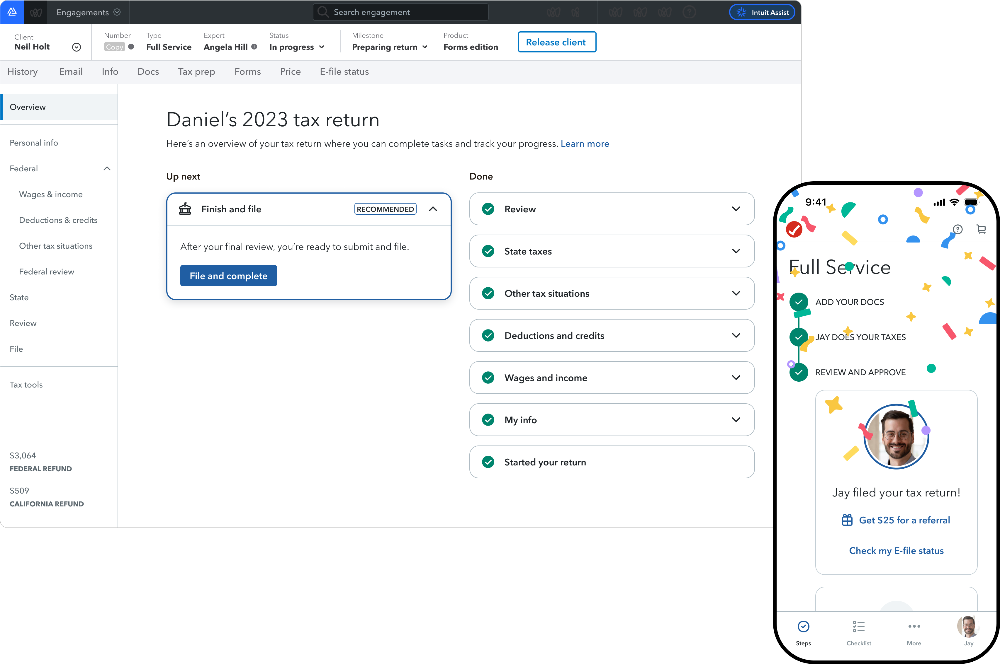
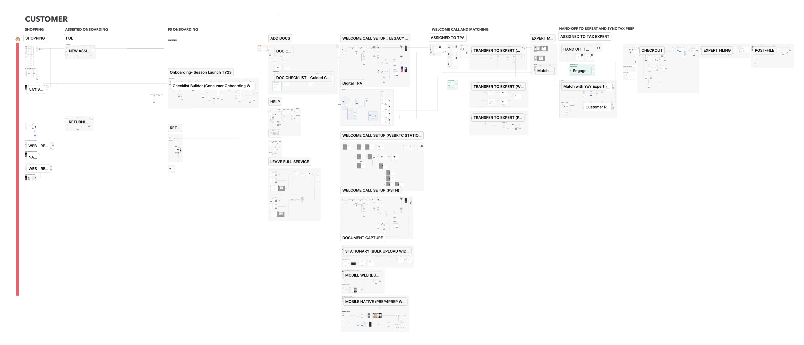
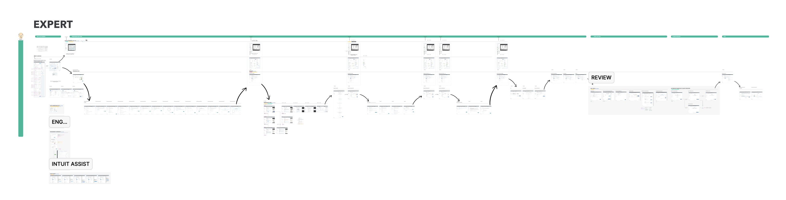
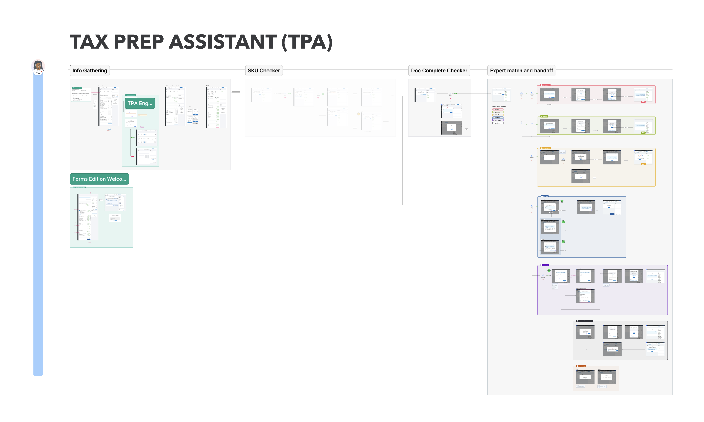
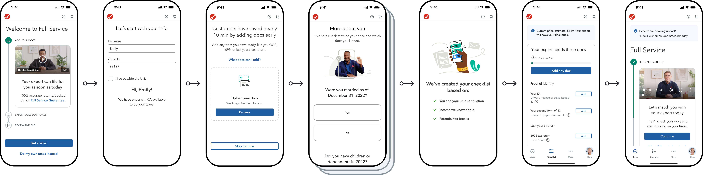
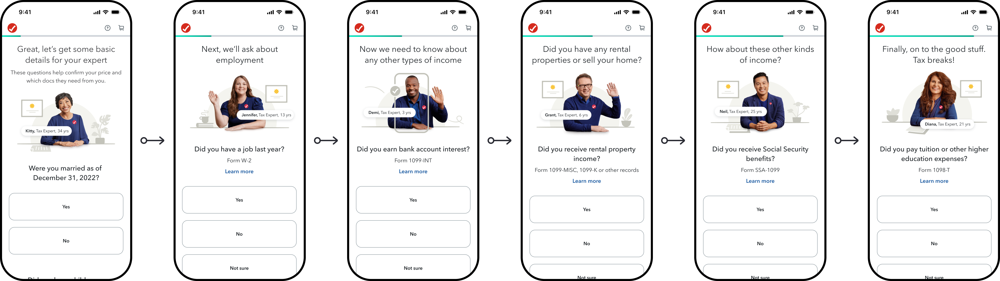
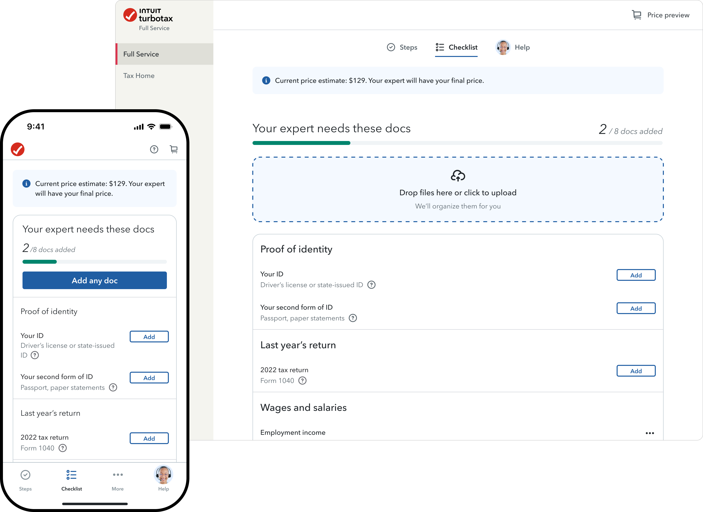
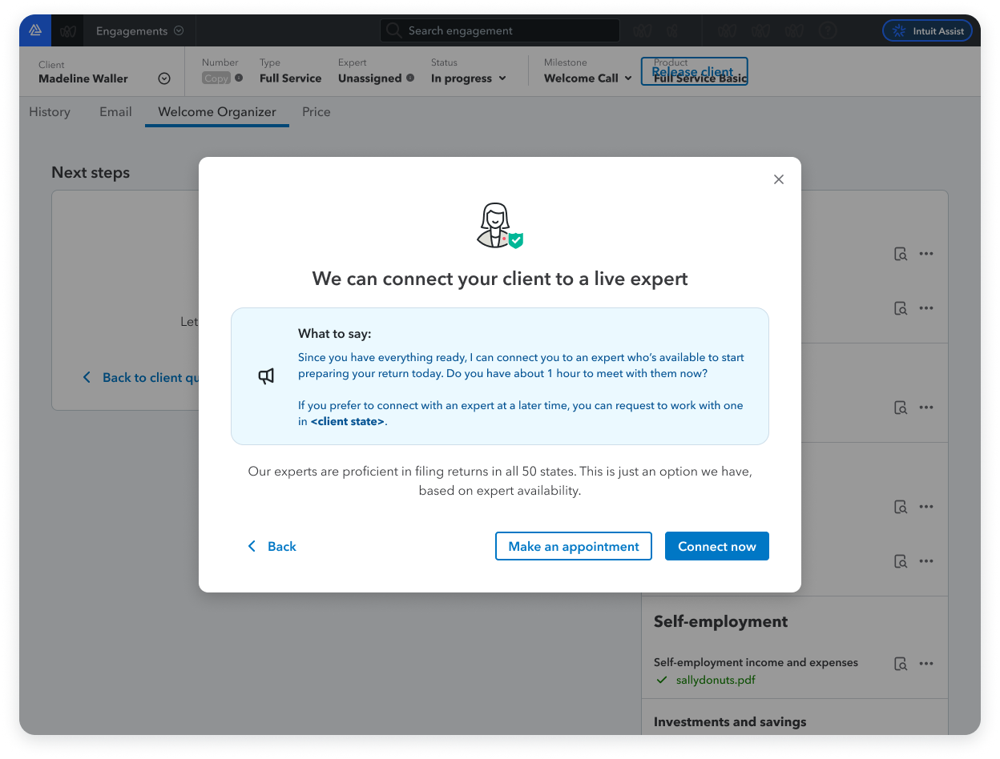
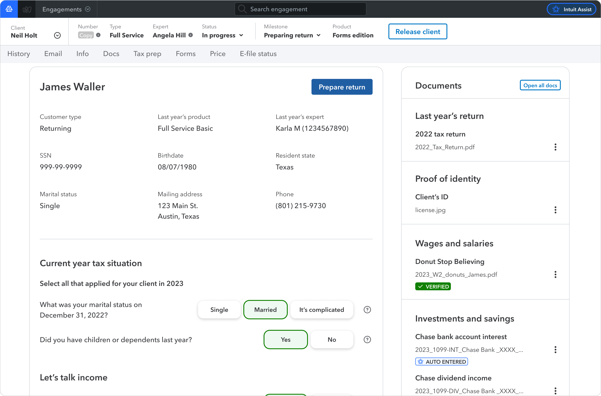

TurboTax Full Service
22 days to a few hours

Customers weren't comparing us to a digital competitor. They were comparing us to sitting in their CPA's office
The problem
TurboTax Live launched with a promise and a workflow that couldn't keep it. By Tax Year 2021, the average customer waited 18 days from their first contact with a tax prep assistant to a filed return. For dissatisfied customers it was 21 days. 30% named wait time as the reason. 16% of all support calls were customers asking where their expert was.
Only 32% of Full Service customers returned the following year.
The product had been designed around the expert's workflow, and it showed. Customers uploaded documents, got queued, waited to be contacted, exchanged messages over days, and eventually reviewed and filed. It was modeled on how a CPA firm operates. The problem is that people go to a CPA's office and sit there until their return is done. They don't drop off their W-2 and come back in 18 days.
Every promise in the marketing was running into friction in the product:
| The promise | The reality |
|---|---|
| "Your dedicated expert" | Expert availability unknown; callbacks frequently missed |
| "Work around your schedule" | Customers adjusting to expert shift windows |
| "Check on your progress anytime" | No visibility; customers called support to find out |
| "Taxes done right" | Nearly a quarter of dissatisfied customers doubted the accuracy of their return |
| "Complete your taxes online" | 18-day average cycle |
The customers bearing the heaviest cost were the ones Full Service was built for: people who wanted to hand their taxes to someone competent and be done. They weren't comparing us to a digital competitor. They were comparing us to sitting in their accountant's office, where you walk in and walk out with your taxes filed.
When we tested the idea of a live, same-session model with prospective customers, the reaction wasn't hesitation. It was recognition. Customers who used in-person accountants or tax stores said the concept made immediate sense. The value proposition wasn't a hard sell. The question was whether we could actually deliver it.
How it started
The seed was a small experiment run by tax prep assistants after the Tax Year 2021 filing deadline. During the extension period, they offered customers the option to skip the multi-day queue and connect directly to a tax expert in the same call. It was manual, operational, and limited in scope. But it proved the core assumption: customers could complete a return in one session when the experience was designed for them to stay.
I worked with product and operations to develop what became the Same Day Full Service model. My role across three years was to design the experience that made it real: the customer-facing product, the tax prep assistant call and handoff, and the tools tax experts used during live sessions. The model only worked when all three were in sync.
Two products, one conviction
Same Day Full Service was two products that had to stay in sync: what the customer saw and did, and what the tax prep assistant and expert needed to complete a return in a single session. No single team owned both. I designed across both, which meant every decision had to hold up on two axes at once.
The conviction running through all of it: customers who were prepared to complete a return were worth more than customers who were fast to connect. Preparation before connection was the unlock. That conviction was contested. Defending it, from the design level up to leadership, was as much of the work as the design itself.



Onboarding
The first, and most contested, place that conviction had to be defended was the pre-signup experience.
Senior leadership held a strong prior: more screens meant more abandonment. Every screen was an opportunity to drop off, so fewer screens before the expert connection meant more completions. The direction from the top was to reduce steps in the funnel. We had to test it.
I pushed back that this was a different type of product. TurboTax Live Full Service wasn't a self-serve flow where friction was purely cost. It was a service that required customer participation to work. Customers who arrived at an expert without documents, without a realistic sense of how long the session would take, without a genuine intent to finish that day. Those customers weren't saving time by connecting faster. They were shifting the cost of their unpreparedness onto the expert's clock.
The design argument was that preparation should feel like progress, not a barrier. I structured the onboarding questions to be easy to answer. Customers already knew the answers. Moderated research sessions validated what the design intended: customers didn't experience the questions as friction. They experienced them as investment. The more they put in, the more committed they felt to the outcome. The psychological pull was deliberate.


The same research surfaced exactly what customers needed to feel confident enough to start: who they'd connect with, when, how long, how much, and why being present while the expert prepared mattered. I pushed toward specificity over hedging. Concrete time estimates. Clear descriptions of the session format. Direct language about what the customer needed to have ready. The core tension was honesty against conversion: more information upfront risked scaring people off. The data pointed toward more. I held that line.
Document readiness
The document checklist was where the conviction became measurable.
The question wasn't whether customers needed their documents before connecting with an expert. That was obvious. The question was where in the flow the checklist belonged. The pull was toward after the connection: get the customer to an expert first and let the expert manage intake. That kept the funnel short and the path to connection fast.
I surfaced it before. The framing mattered: not a barrier to connecting, but preparation for finishing, oriented around the customer's goal of being done today, not the product's goal of getting them to the next screen. Customers who completed more of the checklist before connecting weren't just better prepared. They were more invested. The more effort they'd put in, the less likely they were to abandon. That was by design.

The checklist design evolved considerably across three years. By Tax Year 2023 I was driving a full simplification of how document statuses were tracked: collapsing overlapping states, automating where the system could make determinations on its own, eliminating manual steps wherever possible. Each simplification connected directly to a measurable reduction in session time. The expert's document management experience and the customer's same-day completion rate were the same problem. Cleaning up one improved the other.
Designing across two products
What made both of those decisions harder was that there was no single team with a mandate over the end-to-end experience. The customer product was one team. The expert platform was another. Training, quality, service delivery, and each owned a piece. I became connective tissue across all of them.
That structure created a recurring pattern: decisions that looked right on one side had consequences on the other that nobody was tracking. A design choice that felt smooth to the customer could interrupt an expert mid-preparation. What made the expert faster sometimes added steps on the customer side. Every decision had to hold up on both axes, and there was no clean formula for when it didn't. I made sure the right conversations happened before decisions got made in isolation.
The handoff
In the original model, the tax prep assistant's job ended with intake. I redesigned it to end with handoff, the bridge between the two products.
The rebuilt experience had one goal: get the customer document-ready, confirm they were willing to connect now, and transfer them directly to an expert on the same call. Central to this was a readiness confirmation step where customers explicitly affirmed they were ready. It looked like friction on paper. It was doing selection work before an expert's time was committed. The connect-now / connect-later offer structure honored customers who couldn't connect immediately. By Tax Year 2023, 79% connected immediately, 14% scheduled for later, and 7% booked a specific appointment.

Working with operations and service delivery surfaced a recurring boundary question: what belongs in the product, and what belongs in service operations. Guidance that lives in the product requires an engineering deploy to update. When service delivery needs to adjust what assistants say mid-season, that timeline doesn't work. I pushed for a model where the product provided structure and the service team owned the content within it. That boundary held when operational needs changed mid-season.
Expert-facing tools
A significant share of the leverage lived on the expert side, the second product.
I maintained the end-to-end experience documentation used to train thousands of tax experts going into each season. I directed the redesign of the expert accuracy review flow, consolidating overlapping check categories into a simpler flow with clearer purpose at each step and automation where the system could make its own determinations. I flagged that the vast majority of experts accepted the system's default filing method recommendation without reviewing it. An entire manual selection screen that could be eliminated.

Early in this period I caught that an emerging AI workstream had been designed for the customer-facing experience with no design work started for the expert side. I escalated it, got the workstream expanded, and helped stand up the expert-side design effort before the season started. Two-sided products require two-sided design.
What the failures taught us
The onboarding test
The test came when it had to. Leadership directed the team to dramatically reduce or eliminate the onboarding. The argument was the same one I'd been pushing back against: fewer screens before connection should mean more completions. We ran the test.
Customers who skipped onboarding arrived at experts without documents, without a clear understanding of what Full Service involved, and without a genuine intent to complete. Experts spent session time on intake work the earlier flow was designed to handle. Same-day conversion dropped. The experience degraded for both sides simultaneously.
A customer who connects in two minutes without their documents costs more time than a customer who takes ten minutes to prepare and finishes in one session. The rollback made something explicit that the data had implied all along: what looked like friction in the onboarding was doing real preparation work, and the rest of the system depended on it.
The readiness confirmation bug
A software defect in Tax Year 2023 caused a portion of customers to skip the readiness confirmation step entirely, the moment where customers explicitly affirmed they were ready to connect with a live expert.
The rate of customers who went on to connect with an expert dropped significantly for that group. But among customers who did connect, completion rates were essentially flat. The step wasn't slowing down committed customers. It was identifying uncommitted ones before an expert's time was spent on them. An accidental A/B test, pointing in the same direction as everything else.
What three years built
59% of customers who connected with an expert finished that same day, versus 6% the prior year. Open customer cases dropped 79%. In August 2022, Same Day became the primary approach across all Full Service versions.
Average return completion time went from 22 days to a few hours. Same-day margin increased 97%. On April 15, 58,000 customers started (double the prior year), 11,000 completed returns (266% above), and 17,000 live expert calls were handled (325% above).
The recognition
The Scott Cook Innovation Award was presented at the Q2 Intuit State of the Company meeting. The work reduced average return completion time from 22 days to a few hours and increased same-day margin by 97%. In August 2022 it became the primary approach across all Full Service versions. Scott Cook cited the team's day-one mindset: treating the problem as if TurboTax Live were being built from scratch rather than incrementally improved.
What I learned
-
01
Friction that looks removable is often load-bearing. The onboarding, the readiness confirmation step, the document checklist all looked like steps that slowed customers down. All three were doing preparation or filtering work the rest of the system depended on. I learned to ask what a piece of friction is doing before asking how to remove it.
-
02
You can't design a service experience from only one side. Some of the highest-leverage work I did was on the expert side: the training documentation, the accuracy review redesign, the status simplification. Expert tool friction was a direct constraint on same-day completion rates. Designing for the customer without designing for the expert would have left half the problem unsolved, and the half that customers feel most.
-
03
Institutional memory is a design asset. By Tax Year 2023, I carried detailed context on why nearly every significant decision in the product existed: what we'd tried before, what broke, what the data said, what we'd consciously decided not to do. That context repeatedly protected the team from re-learning expensive lessons. I came to treat documented rationale as something worth maintaining, not just a deliverable artifact.